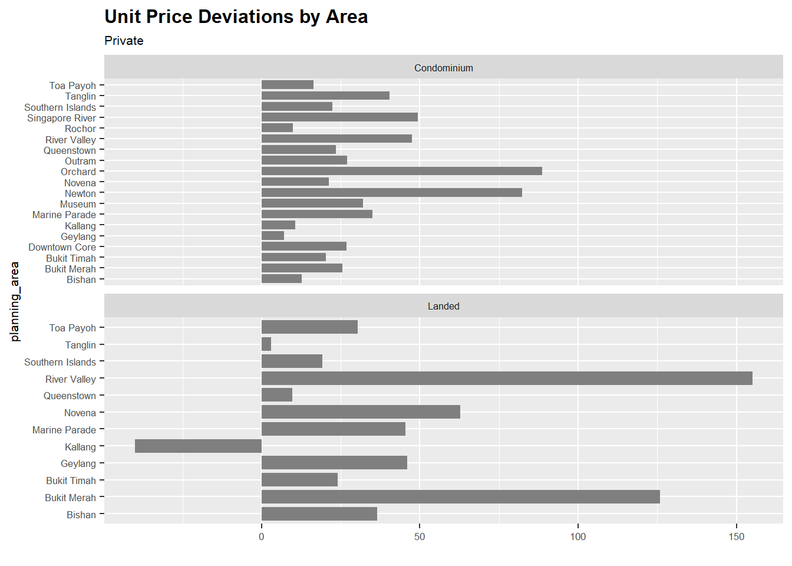
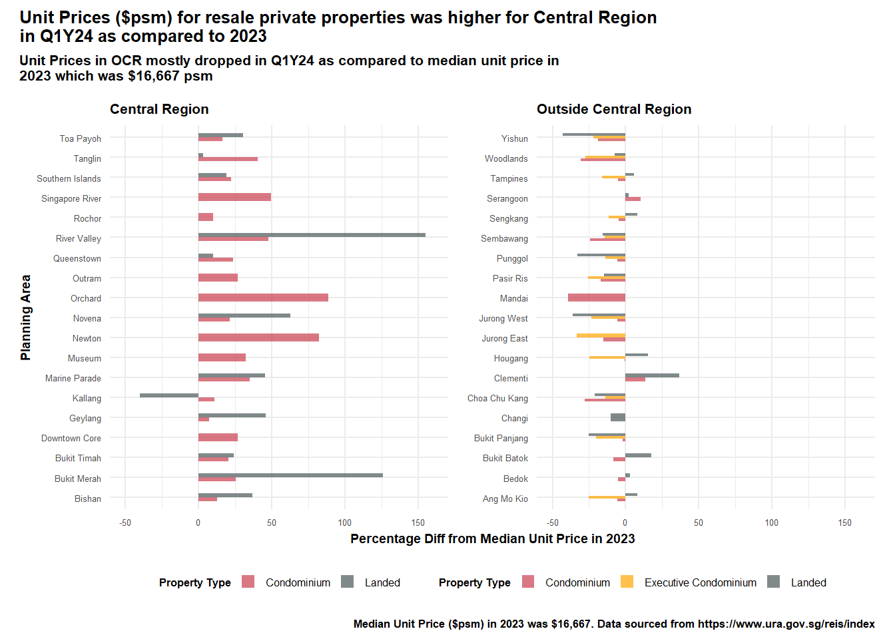

# Private
df_Aavg <- uniondata %>%
filter(Purchaser.Address.Indicator == "Private") %>%
group_by(Planning.Area) %>%
summarise(avg_Aprice = mean(Unit.Price....PSF.))
df_Aavg$p_z <- round((df_Aavg$avg_Aprice - mean(df_Aavg$avg_Aprice)) / sd(df_Aavg$avg_Aprice), 2)
df_Aavg$p_ztype <- ifelse(df_Aavg$p_z < 0, "below", "above")
df_Aavg <- df_Aavg[order(df_Aavg$p_z), ]
df_Aavg$Planning.Area <- factor(df_Aavg$Planning.Area, levels = df_Aavg$Planning.Area)
plot11 <- ggplot(df_Aavg, aes(x = Planning.Area, y = p_z, label = p_z)) +
geom_bar(stat = "identity", aes(fill = p_ztype), position = position_dodge2(width = 2), width = 0.8) +
scale_fill_manual(name = "Average Price", labels = c("Above Average", "Below Average"), values = c("below" = "#C83E4D", "above" = "#4A5859")) +
labs(title = "Unit Price Deviations by Area", y = "", subtitle = "Private") +
coord_flip() +
theme(legend.position = "None", text = element_text(size = 8), plot.title = element_text(size = 12, face = "bold"))
# HDB
df_AHavg <- uniondata %>%
filter(Purchaser.Address.Indicator == "HDB") %>%
group_by(Planning.Area) %>%
summarise(avg_Aprice = mean(Unit.Price....PSF.))
df_AHavg$p_z <- round((df_AHavg$avg_Aprice - mean(df_AHavg$avg_Aprice)) / sd(df_AHavg$avg_Aprice), 2)
df_AHavg$p_ztype <- ifelse(df_AHavg$p_z < 0, "below", "above")
df_AHavg <- df_AHavg[order(df_AHavg$p_z), ]
df_AHavg$Planning.Area <- factor(df_AHavg$Planning.Area, levels = df_AHavg$Planning.Area)
plot22 <- ggplot(df_AHavg, aes(x = Planning.Area, y = p_z, label = p_z)) +
geom_bar(stat = "identity", aes(fill = p_ztype), position = position_dodge2(width = 2), width = 0.8) +
scale_fill_manual(name = "Average Price", labels = c("Above Average", "Below Average"), values = c("below" = "#C83E4D", "above" = "#4A5859")) +
labs(y = "", x = "", subtitle = "HDB") +
coord_flip() +
theme(text = element_text(size = 8),
legend.title = element_blank(),
legend.position = c(0.25, 0.9),
legend.key.size = unit(0.4, 'cm'),
legend.key.height = unit(0.4, 'cm'),
legend.key.width = unit(0.4, 'cm'))
plot11 + plot22Take Home Ex 2
Overview of Tasks
In this take-home exercise, we are required to:
select one data visualisation from the Take-home Exercise 1 submission prepared by your classmate,
critic the submission in terms of clarity and aesthetics,
prepare a sketch for the alternative design by using the data visualisation design principles and best practices you had learned in Lesson 1 and 2.
remake the original design by using ggplot2, ggplot2 extensions and tidyverse packages.
1. Data Visualisation Critique
1.1 Original Design
The plot below shows the original design of the unit price deviations by planning areas. We can access the original dashboard from here.
2. Critique
2.1 Clarity
I think the chart is a bit misleading given that the data did not include HDB prices, perhaps the originator was a bit confused about the data set. In fact, the data comprises only private residential property - we will try to adjust this in our data visualisation make over.
When we look at the title - it says “Unit Price Deviations by Area” which provides a brief overview of what the graph is trying to show - but the title could be titled differently to bring across the key points from the chart. For example in the initial chart where the originator separated by HDB and Private - they could compare the unit prices between them and whether the planning areas are the same. Or simply the title could say - “Unit Prices are higher than average in the Central Region”.
The data utilised all the planning areas and show it on the chart, but it does not bring across the key message that we want to convey - or whether there are any important planning areas that we want to focus on. The order of the planning area here is not meaningful for us to understand.
The x-axis is in terms of std dev above the average price (we assume so and also not indicated whether is it in psf or psm), but there is no indication of the actual prices. This makes it difficult for the reader to associate the chart with the actual prices and the delta in between. The comparison of the actual average price is also not listed here.
The chart also did not indicate a time frame and it was also not highlighted in the title - hence we are not clear about the time period that this chart is referring to - whether 2023 or quarterly or monthly data.
We are also not sure which type of sales data the price is referring to - whether is it new sale or resale.
2.2 Aesthetics
There is color differentiation between those with prices above average and those below average which makes it easier to read.
The y axis - should change the label to remove the underscore.
The chart looks clean and neat. The legend is neatly tucked away and not repeated in both graphs.
The gridlines can be a bit distracting.
3. Makeover Design
3.1 Design Sketch
We start by thinking about the message we want to convey and coming up with a sketch.
Since we want to talk abt the unit prices across planning areas, I think we should have them grouped by regions.
We can compare the current price in Q1 Y24 vs the median prices in 2023 - so we know the changes in unit prices of each area.
We compare the bars between the Condominiums and Landed Properties so we can easily understand the unit prices of each area.
The scale should also be in $psm so that the readers can visualise how much in dollar sense instead of requiring to do a mental calculation
3.2 Data Preparation
Given that there were some misconception about the data by the originator, I will utilise the version that was cleaned up by myself to try to plot this chart instead.
Having save the data previously in rds - i can easily call it up:
Loading the packages:
pacman::p_load(plotly, patchwork, hrbrthemes, ggridges, ggrepel, tidyverse, ggpubr, scales, colorspace, ggdist)Reading the data from rds file:
realis2324 <- read_rds("rds/realis2324_cleaned.rds")Data Prep required:
Adjust the property types to summarise Landed Properties.
Calculate the median prices in 2023 and the difference in unit price ($psm) for Q1Y24 and determine if it is above median or below median for both Condominiums, Exec Condo and Landed Properties
Code
realis2324 <- realis2324 %>%
mutate(property_type = case_when(
property_type %in% c("Condominium", "Executive Condominium") ~ property_type,
TRUE ~ "Landed"
))
realis_subset23 <- realis2324 %>%
filter(sale_type %in% c("Resale", "Sub Sale"),
quarter %in% c("Q1Y23", "Q2Y23", "Q3Y23", "Q4Y23")
)
resale23_median <- round(median(realis_subset23$unit_psm))
realis_subset24 <- realis2324 %>%
filter(sale_type %in% c("Resale", "Sub Sale"),
quarter %in% c("Q1Y24")
)
realis_subset24 <- realis_subset24 %>%
mutate(
diff_from_median = unit_psm - resale23_median,
percent_difference = ((unit_psm - resale23_median)/resale23_median)* 100
)
df_unitprices <- realis_subset24 %>%
group_by(planning_area, property_type) %>%
summarize(
average_diff_from_median = mean(diff_from_median, na.rm = TRUE),
average_percent_from_median = mean(percent_difference, na.rm = TRUE),
planning_region = first(planning_region)
) %>%
mutate(above_median = ifelse(average_diff_from_median > 0, "Above Median", "Below Median"))3.3 Plotting the Charts
We will try with one planning region first - lets start with the Central Region.
realis_subset24_central <- df_unitprices %>%
filter(planning_region == "Central Region")
realis_subset24_ocr <- df_unitprices %>%
filter(planning_region != "Central Region") Utilising the code by the originator:
plot11 <- ggplot(realis_subset24_central, aes(x = planning_area, y = average_percent_from_median)) +
geom_bar(stat = "identity", aes(fill = above_median), position = position_dodge2(width = 2), width = 0.8) +
scale_fill_manual(name = "Median Price", labels = c("Above Median", "Below Median"), values = c("below" = "#C83E4D", "above" = "#4A5859")) +
labs(title = "Unit Price Deviations by Area", y = "", subtitle = "Private") +
coord_flip() +
facet_wrap(~ property_type, scales = "free_y", ncol = 1) +
theme(legend.position = "None", text = element_text(size = 8), plot.title = element_text(size = 12, face = "bold"))
plot11
Note
We notice here that for the Central Region, the average unit price in $ psm is all above the median and that there are 19 planning areas within the Central Region out of 38 (i.e. 50%).
The data is now on two separate graphs, lets see if we can combine them into 1.
plot_cr <- ggplot(realis_subset24_central, aes(x = planning_area, y = average_percent_from_median, fill = above_median)) +
geom_bar(aes(fill = property_type), stat = "identity", position = "dodge", width = 0.4, alpha = 0.7) +
scale_fill_manual(name = "Property Type", labels = c("Condominium", "Landed"),
values = c("Condominium" = "#C83E4D", "Landed" = "#4A5859")) +
labs(x = "Planning Area", y = "Percentage Diff from Median Unit Price in 2023", subtitle = "Central Region") +
coord_flip() +
ylim(-50, 160) +
theme_minimal() +
theme(legend.position = "none",
text = element_text(size = 8)
)
plot_crplot_ocr <- ggplot(realis_subset24_ocr, aes(x = planning_area, y = average_percent_from_median, fill = above_median)) +
geom_bar(aes(fill = property_type), stat = "identity", position = "dodge", width = 0.4, alpha = 0.7) +
scale_fill_manual(name = "Property Type", labels = c("Condominium", "Executive Condominium", "Landed"),
values = c("Condominium" = "#C83E4D","Executive Condominium" = "orange", "Landed" = "#4A5859")) +
labs(x = "Planning Area", y = "Percentage Diff from Median Unit Price in 2023", subtitle = "Outside Central Region") +
coord_flip() +
ylim(-50, 160) +
theme_minimal()+
theme(legend.position = "none",
text = element_text(size = 8),
plot.title = element_text(size = 12, face = "bold"))
plot_ocr3.4 Final Chart
Then we will use patchwork to combine the 2 charts and also to beautify the chart.
g1 <- plot_cr | plot_ocr
g2 <- g1 + plot_annotation(
title = str_wrap("Unit Prices ($psm) for resale private properties was higher for Central Region in Q1Y24 as compared to 2023"),
subtitle = str_wrap("Unit Prices in OCR mostly dropped in Q1Y24 as compared to median unit price in 2023 which was $16,667 psm"),
caption = "Median Unit Price ($psm) in 2023 was $16,667. Data sourced from https://www.ura.gov.sg/reis/index"
) +
plot_layout(axis_titles = "collect", guides = "collect") &
theme(title=element_text(size=8, face='bold'),
axis.text.x = element_text(size = 5),
axis.text.y = element_text(size = 5),
axis.title.y = element_text(size = 7),
axis.title.x = element_text(size = 7),
legend.key.size = unit(0.3, 'cm'), #change legend key size
legend.key.height = unit(0.3, 'cm'), #change legend key height
legend.key.width = unit(0.3, 'cm'), #change legend key width
legend.title = element_text(size=6), #change legend title font size
legend.text = element_text(size=6),
legend.position = "bottom"
)
g2 
3.5 Improvements of Chart
Some of the improvements made to the chart:
Provided the key messages in the title and sub-title
Labelled the axes accordingly to provide readers a clearer understanding of the graphs
Separated the graph by the regions - Central vs Outside Central Region - which provided a key insight into the changes in the unit prices ($psm) for Q1Y24
Provided a quick comparison across property types - between Condominiums, Executive Condos and Landed properties. This also showed a key insight - that only the landed properties in Kallang (within Central Region) transacted at below median.
Provided the source of the data in the captions.
Kept the axes consistent to show the delta between those in central region and those in OCR.
4. Learning Points
By going through this exercise, we were able to better understand how we should design our graphics to better convey our messages. Besides manipulating the data, it is also important to have some domain knowledge about the data - so that the analysis and key messages will be more on point.
We also realise that there is no one best solution - it is often a trade-off between clarity and aesthetics. More importantly, I think we need to first question the intent and purpose of the chart and then design our chart accordingly.
We also learnt some of the other best practices by going through the works of our peers and we can better employ them in our subsequent visualisations.